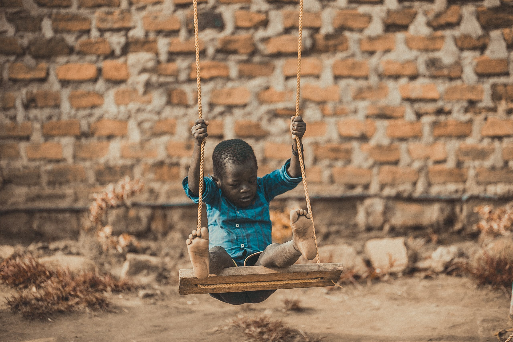
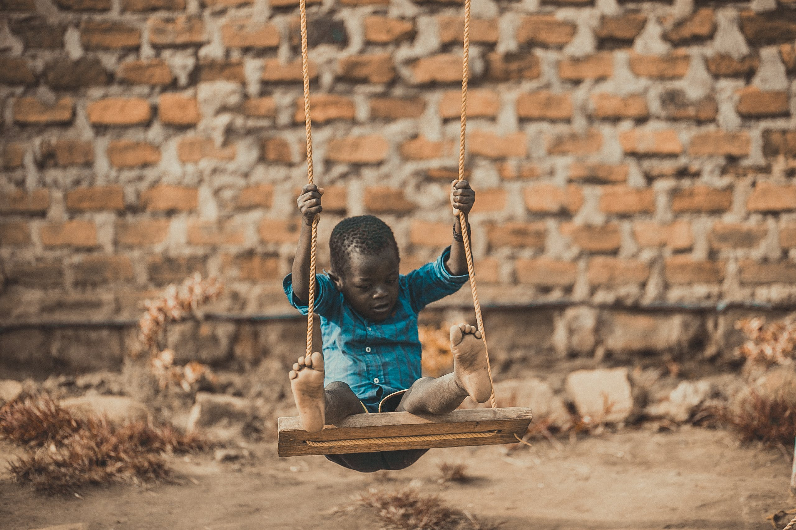
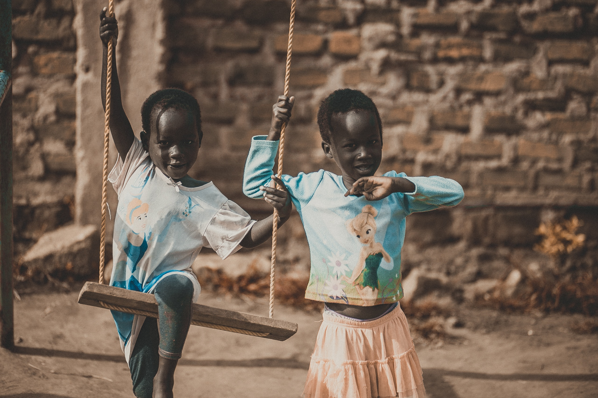
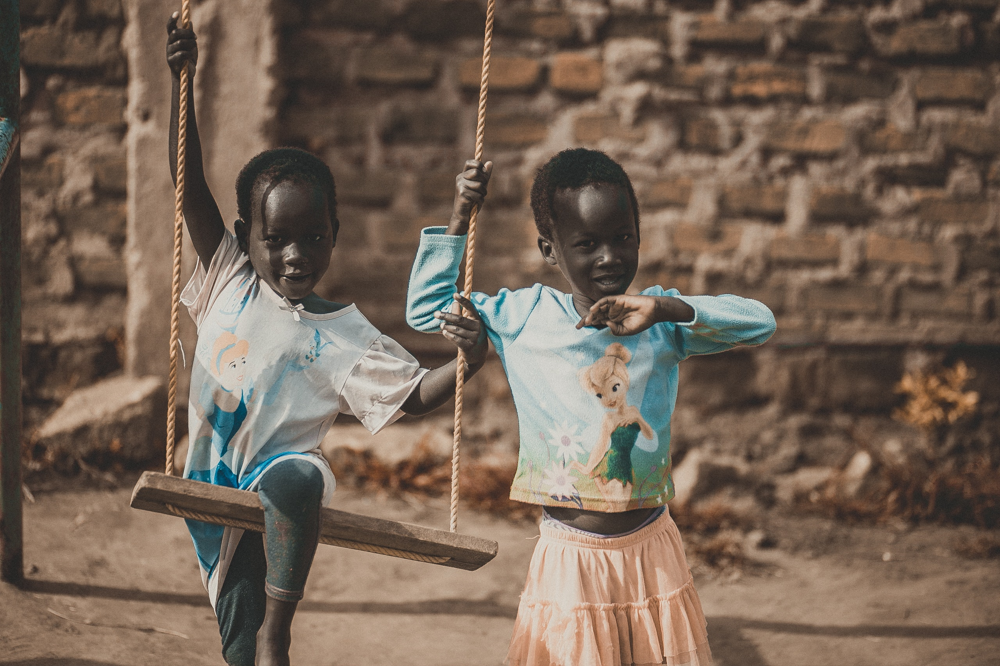

“I'm Adu Baffour, the one who looks after these awesome kids at All Nations
Charity Home. I just had to take a moment to say a huge thank you to Clement and
everyone involved. Your gifts of books, pencils, sharpeners, and erasers have made
a big, wonderful difference in our children's lives. It's like a bright light of hope we
never expected. Your help through the NathanielCares to various orphanage homes
in Ghana is amazing. Thank you from the bottom of our hearts! I'm praying with
all my heart for blessings from the Almighty to come your way, Clement, and to
your foundation. May the good Lord keep on blessing you all a lot. Your kindness
has made a forever mark in our grateful hearts. So much love and thanks!”
Adu Baffour, General Overseer of All Nations Charity Home
Giving every orphan a fighting chance
that no child is left behind.


Mr. Sammy Adu-Boakye, our co-founder, is a graduate student of Presbyterian Boys Secondary is currently a news presenter for Kessben FM. He is highly ambitious and hardworking, actively participating in numerous numerous outreach events and organizations in Ghana by spearheading the Kessben Outreach Foundation - a charity foundation for the indigene. Mr. Sammy is the founder of Yes Study Abroad and also serves as an ambassador for donation drives in Ghana before joining NathanielCares.
Clement Agyei, our Co-founder ,is a graduate from Prempeh College. He's the founder of We Care Foundation. Clement is a compassionate and self-centered person who is best known for his contribution to low-income communities in Ghana. Clement also serves as an ambassador for pepsodent and toothbrush in Ghana.
Rev. Clement Fudjuor, our advisor, is a chair counselor of Opoku Ware School and also a lecturer at Garden City University. Rev. Clement is a hardworking and a people person who is very understandable and easy to work with .He is best known for holding a PHD and master's degree at Texas University .
Nathaniel, the founder, has always been actively involved in social activities in Ghana and had a dream to work with his childhood friends and qualified individuals in the social welfare sector. He is the eldest son of the late Mr. Daniel Afriyie, a trader, and late Mrs. Akua Achiaa Afriyie, also a trader. Nathaniel strongly believes in the philosophy that helping orphanages leads to lifelong happiness and is dedicated to making a meaningful and constructive contribution to society in which they live.
Natheniel Cares is a nonprofit outreach foundation
founded by Nathaniel Afriyie graduate of Opoku
Ware School ... I Natheniel Cares puts smiles on
the faces of orphans in various orphanage homes
in Ghana by offering donations in both cash and
Not only do we save children. We build character within the
children in our care, so they become good functioning
 


 
